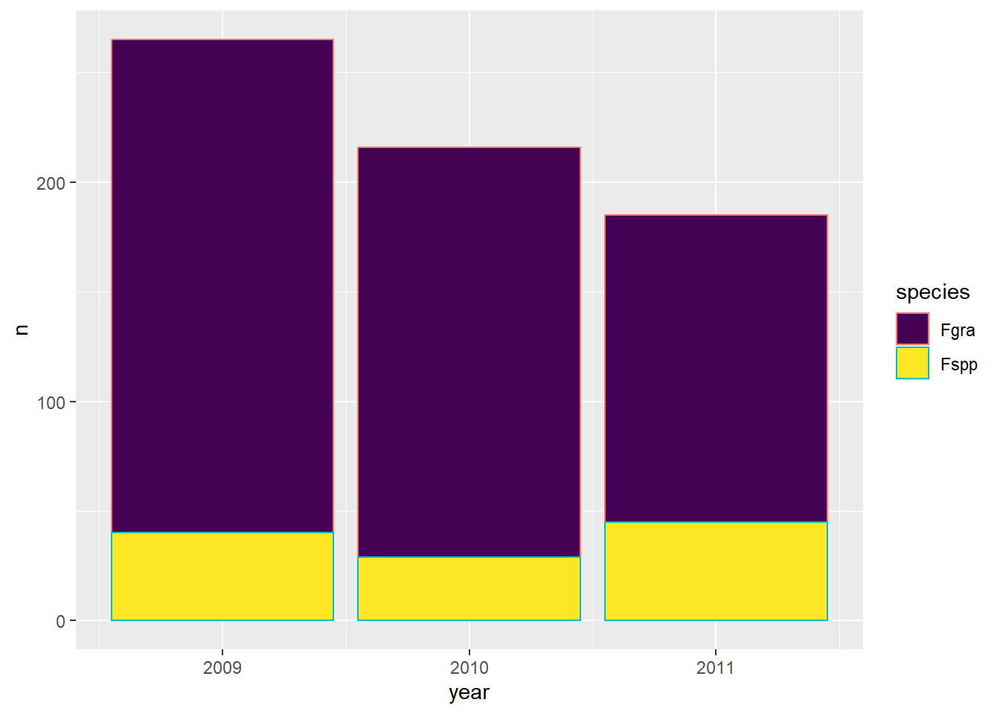
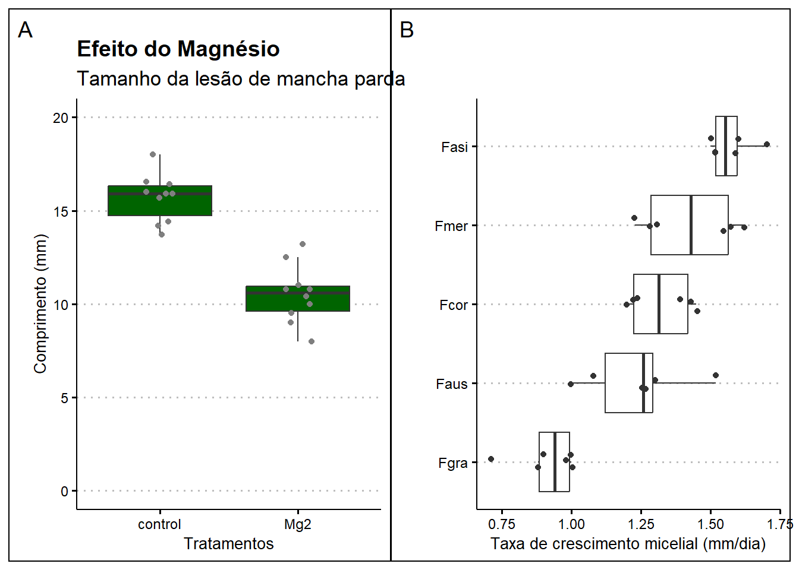

##install.packages("readxl")
##install.packages("gsheet2tbl")
library(readxl)
library(gsheet)
library(tidyverse)
library(dplyr)
dados <- read_excel("dados-diversos.xlsx",
sheet = "sensibilidade_fungicidas")
dados <- gsheet2tbl("https://docs.google.com/spreadsheets/d/1bq2N19DcZdtax2fQW9OHSGMR0X2__Z9T/edit?gid=373270992#gid=373270992")
survey = gsheet2tbl("https://docs.google.com/spreadsheets/d/1bq2N19DcZdtax2fQW9OHSGMR0X2__Z9T/edit?gid=1118819738#gid=1118819738")Aula 2 - Ler dados de arquivos
Ler dados de arquivos
Dados no Excel
Vamos utilizar dois métodos de importação:
Leitura de uma planilha local com a função
read_excel();Importação direta de planilhas do Google Sheets por meio da função
gsheet2tbl(), permitindo o acesso a diferentes abas de um mesmo documento online.
Gerando uma tabela de contingência
Utilizando a função tabyl() do pacote janitor, vamos construir uma tabela de contingência que resume a frequência de espécies por estado e ano, facilitando a análise descritiva.
##install.packages("janitor")
library(janitor)
survey_b = survey |>
group_by(state, species, year) |>
mutate(n = n())
survey_b |>
tabyl(state, species, year)$`2009`
state Fgra Fspp
PR 92 31
RS 133 9
$`2010`
state Fgra Fspp
PR 0 0
RS 187 29
$`2011`
state Fgra Fspp
PR 58 35
RS 82 10Visualizar os dados
Vamos criar um gráfico de barras com ggplot2, demonstrando a distribuição temporal do número de registros por espécie. As barras foram preenchidas com cores diferenciadas para cada espécie, utilizando a paleta perceptualmente uniforme viridis, adequada para visualizações inclusivas e publicações.
survey_b |>
group_by(year, species) |>
count() |>
ggplot(aes(year, n, fill = species,
color = species))+
geom_col()+
scale_fill_viridis_d()
#scale_fill_manual(values = c("red", "blue"))
#facet_wrap(~year)Editar e Exportar Gráficos
Vamos elaborar um gráfico do tipo boxplot com sobreposição de pontos individuais (geom_jitter) para visualizar a variação dos dados por tratamento. Vamos usar o pacote ggthemes para facilitar a personalização estética do gráfico, com alternativas visuais prontas e mais sofisticadas do que os temas padrão do ggplot2. Além disso, vamos salvar o gráfico gerado em formato .png usando a função ggsave.
mg <- gsheet2tbl("https://docs.google.com/spreadsheets/d/1bq2N19DcZdtax2fQW9OHSGMR0X2__Z9T/edit?gid=983033137#gid=983033137")
library(ggthemes)
plot_mg <- mg |>
ggplot(aes(trat, comp))+
geom_boxplot(fill = "darkgreen",
outlier.color = NA)+
geom_jitter(width = 0.1, color = "gray50")+
scale_y_continuous(limits = c(0,20))+
labs(x = "Tratamentos",
y = "Comprimento (mm)",
title = "Efeito do Magnésio",
subtitle = "Tamanho da lesão de mancha parda")+
theme_clean()
#theme_classic(base_size = 14)
ggsave("box.png", bg = "white", width = 4, height = 4)Os dados da aba micelial serão utilizados para representar graficamente a taxa de crescimento micelial de diferentes espécies de fungos. As espécies foram ordenadas com base na mediana da taxa observada, e os dados foram visualizados com um boxplot horizontal. Também foram incluídos os valores individuais como pontos sobrepostos.
micelial <- gsheet2tbl("https://docs.google.com/spreadsheets/d/1bq2N19DcZdtax2fQW9OHSGMR0X2__Z9T/edit?gid=959387827#gid=959387827")
plot_micelial <- micelial |>
ggplot(aes(reorder(especie, tcm), tcm))+
geom_boxplot(outlier.colour = NA)+
geom_jitter(width = 0.1, color = "gray20")+
coord_flip()+
labs(x = "", y = "Taxa de crescimento micelial (mm/dia)")+
theme_clean()Combinar Gráficos
Os gráficos gerados anteriormente foram combinados lado a lado utilizando o pacote patchwork. Esse pacote permite compor múltiplos gráficos construídos com ggplot2 de maneira intuitiva, utilizando operadores como | (lado a lado) e / (empilhados verticalmente).
library(patchwork)
(plot_mg | plot_micelial) +
plot_annotation(tag_levels = "A")
ggsave("combo1.png", bg = "white",
width = 8, height = 4)A figura resultante foi então salva no diretório de trabalho por meio da função ggsave(), com fundo branco e dimensões de 8 x 4 polegadas
Conlcusão
Nessa etapa, utilizamos os pacotes: tidyverse, janitor, ggplot2, patchwork e ggthemes para processar planilhas provenientes de diferentes fontes (locais e online), organizar e sumarizar variáveis categóricas e contínuas, bem como para a construção de visualização de gráficos.